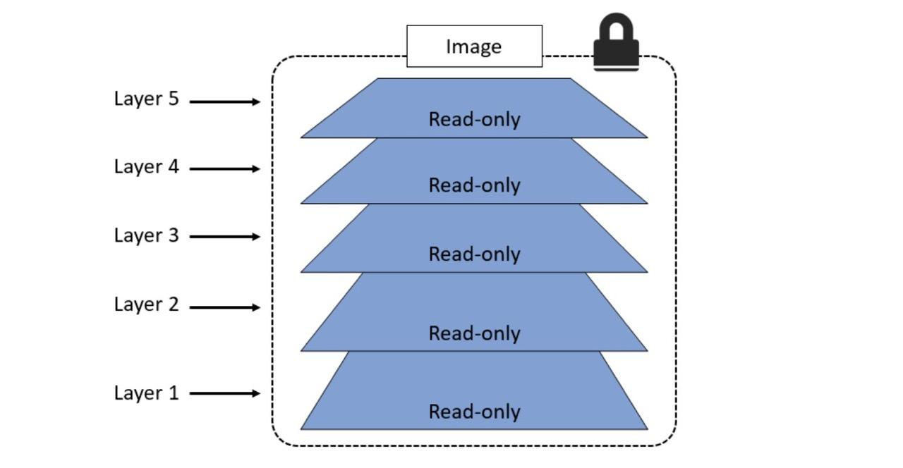
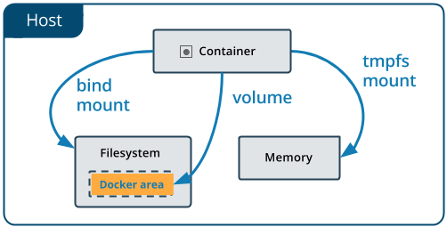

Контейнеры
Образ – это набор программного обеспечения на диске, а контейнер – работающий экземпляр образа вместе со сведениями о времени и процессах выполнении операции

Контейнеры
Контейнер Docker упаковывает ПО приложения в невидимую коробку со всем, что нужно приложению для запуска. В том числе:
- операционную систему;
- код приложения;
- среду выполнения;
- библиотеку;
- системные инструменты.
Механизмы контейнеризации
Термин «контейнер» на самом деле является просто абстрактным понятием, описывающим, как несколько различных функций работают вместе, чтобы визуализировать своеобразный «контейнер»
Когда вы запускаете контейнер, Docker создаёт пространства имён, которые будет использовать конкретный контейнер и обеспечивать изоляцию процессов друг от друга.
Пространства имен контейнера
- Network (Net) предоставляет контейнеру возможность ограничивать работу сетевого стека системы внутри своей среды. В этот процесс входят сетевые устройства, IP-адреса, таблицы (IP) маршрутизации, номера портов и многое другое.
- PID – это идентификатор процесса. Если вы запустить утилиту ps aux в командной строке, чтобы проверить, какие процессы запущены в вашей системе, вы видели столбец с названием «PID». Когда процесс помещается в это пространство имён, он получает собственное значение – например, «PID 1».
- Mount (MNT) изолирует точки монтирования в системе.
- User – это неймспейс, который используется для изоляции пользователей в контейнере.
- IPC расшифровывается как Inter Process Communications — «межпроцессное взаимодействие». Это пространство имён, отвечающее за изоляцию IPC ресурсов в процессах, работающих внутри каждого контейнера.
- UTS (UNIX Time-Sharing) позволяет контейнерам иметь собственное имя хоста и доменное имя NIS, которое не зависит от других контейнеров и хост-системы.
Контрольные группы
Контрольные группы (так называемые «си-группы» или cgroups) — это функция ядра Linux, которая отвечает за управление ресурсами (ЦП, память, сеть). Контрольная группа гарантирует, что контейнеры Docker будут использовать только те ресурсы, которые им нужны, и при необходимости устанавливает ограничения на то, к каким ресурсам контейнер имеет доступ. Иными словами, контрольные группы – это гарант того, что один контейнер не истощит один из этих ресурсов и не приведет к стопу всей системы.
Что такое docker простыми словами
У нас есть пул “чистых” агентов, на которых ничего не предустановлено (кроме необходимого для работы с Docker). И есть множество проектов на разных стеках. У каждого проекта — свои требования по библиотекам, SDK и т.п. И благодаря Docker бизнес-линии могут не делить поровну агентов между собой, а использовать общие ресурсы в соответствии со своими потребностями. Для этого они берут из хранилища и разворачивают на агентах необходимые Docker-образы (с нужными версиями библиотек). Каждая бизнес-линия использует свои Docker-образы с любыми экзотическими инструментами, если таковые требуются.
Системы слоев
Каждый образ Docker состоит из одного или нескольких слоев, наложенных друг на друга. Некоторые слои содержат различные файлы, другие представляют собой метаслои, изменяющие уже существующие. Поэтому разные образы часто имеют общие слои.
Docker demon
Демон за пускается на хост-машине. Пользователь не взаимодействует с сервером на прямую, а использует для этого клиент.
Docker client
Docker-клиент, программа docker — главный интерфейс к Docker. Она получает команды от пользователя и взаимодействует с docker-демоном.
Образы
Docker-образ — это read-only шаблон. Например, образ может содержать операционку Ubuntu c Apache и приложением на ней. Образы используются для создания контейнеров. Docker позволяет легко создавать новые образы, обновлять существующие, или вы можете скачать образы созданные другими людьми. Образы — это компонента сборки docker-а.
Реестр
Docker-реестр хранит образы. Есть публичные и приватные реестры, из которых можно скачать либо загрузить образы. Публичный Docker-реестр — это Docker Hub. Там хранится огромная коллекция образов. Как вы знаете, образы могут быть созданы вами или вы можете использовать образы созданные другими. Реестры — это компонента распространения.
Контейнеры
Контейнеры похожи на директории. В контейнерах содержится все, что нужно для работы приложения. Каждый контейнер создается из образа. Контейнеры могут быть созданы, запущены, остановлены, перенесены или удалены. Каждый контейнер изолирован и является безопасной платформой для приложения. Контейнеры — это компонента работы.
Команды
- create — создает контейнер из выбранного образа.
- start — активирует уже существующий контейнер.
- run — создает новый контейнер и сразу включает его.
- ls — отображает все существующие контейнеры.
- inspect — подробнее рассказывает о выбранном контейнере.
- logs — выводит в консоль логи (то есть журнал событий).
- stop — пытается остановить выбранный контейнер, отправив ему сигнал SIGTERM, требующий завершить всю активность и сохранить пользовательские данные. Если ответ занимает слишком много времени, то следом посылает сигнал SIGKILL, чтобы «убить» процесс без сохранения данных.
- kill — выполняет ту же задачу, что и предыдущая команда, но пропускает шаг с отправкой SIGTERM. Сразу выключает контейнер, игнорируя сохранение пользовательских данных.
- rm — удаляет выбранный контейнер (он должен быть выключен, чтобы команда сработала).
Создание контейнера
docker create [OPTIONS] IMAGE [COMMAND] [ARG...]Запуск контейнера
docker start [OPTIONS] CONTAINER [CONTAINER...]Создание и запуск контейнера
docker run [OPTIONS] IMAGE [COMMAND] [ARG...]Просмотр контейнеров
docker ps [OPTIONS]Просмотр информации контейнера
docker inspect [OPTIONS] NAME|ID [NAME|ID...]Просмотр логов
docker logs [OPTIONS] CONTAINERОстановить контейнер
docker stop [OPTIONS] CONTAINER [CONTAINER...]Остановить контейнер
docker kill [OPTIONS] CONTAINER [CONTAINER...]Удалить контейнер
docker rm [OPTIONS] CONTAINER [CONTAINER...]Создать контейнер с нуля
docker build [OPTIONS] PATH | URL | -Инструкции в Dockerfile
-
FROM— задаёт базовый (родительский) образ. -
LABEL— описывает метаданные. Например — сведения о том, кто создал и поддерживает образ. -
ENV— устанавливает постоянные переменные среды. -
RUN— выполняет команду и создаёт слой образа. Используется для установки в контейнер пакетов. -
COPY— копирует в контейнер файлы и папки. -
ADD— копирует файлы и папки в контейнер, может распаковывать локальные .tar-файлы. -
CMD— описывает команду с аргументами, которую нужно выполнить когда контейнер будет запущен. Аргументы могут быть переопределены при запуске контейнера. В файле может присутствовать лишь одна инструкцияCMD. -
WORKDIR— задаёт рабочую директорию для следующей инструкции. -
ARG— задаёт переменные для передачи Docker во время сборки образа. -
ENTRYPOINT— предоставляет команду с аргументами для вызова во время выполнения контейнера. Аргументы не переопределяются. -
EXPOSE— указывает на необходимость открыть порт. -
VOLUME— создаёт точку монтирования для работы с постоянным хранилищем.
Инструкция FROM
Ключевое слово FROM сообщает Docker о том, чтобы при сборке образа использовался бы базовый образ, который соответствует предоставленному имени и тегу. Базовый образ, кроме того, ещё называют родительским образом.
Инструкция LABEL
Инструкция LABEL (метка) позволяет добавлять в образ метаданные. В случае с рассматриваемым сейчас файлом, она включает в себя контактные сведения создателя образа. Объявление меток не замедляет процесс сборки образа и не увеличивает его размер. Они лишь содержат в себе полезную информацию об образе Docker, поэтому их рекомендуется включать в файл.
Инструкция ENV
Инструкция ENV позволяет задавать постоянные переменные среды, которые будут доступны в контейнере во время его выполнения. В предыдущем примере после создания контейнера можно пользоваться переменной ADMIN.
Инструкция ENV хорошо подходит для задания констант. Если вы используете некое значение в Dockerfile несколько раз, скажем, при описании команд, выполняющихся в контейнере, и подозреваете, что, возможно, вам когда-нибудь придётся сменить его на другое, его имеет смысл записать в подобную константу.
Инструкция RUN
Инструкция RUN позволяет создать слой во время сборки образа. После её выполнения в образ добавляется новый слой, его состояние фиксируется. Инструкция RUN часто используется для установки в образы дополнительных пакетов. В предыдущем примере инструкция RUN apk update && apk upgrade сообщает Docker о том, что системе нужно обновить пакеты из базового образа. Вслед за этими двумя командами идёт команда && apk add bash, указывающая на то, что в образ нужно установить bash.
Инструкция COPY
Инструкция COPY представлена в нашем файле так: COPY . ./app. Она сообщает Docker о том, что нужно взять файлы и папки из локального контекста сборки и добавить их в текущую рабочую директорию образа. Если целевая директория не существует, эта инструкция её создаст.
Инструкция ADD
Инструкция ADD позволяет решать те же задачи, что и COPY, но с ней связана ещё пара вариантов использования. Так, с помощью этой инструкции можно добавлять в контейнер файлы, загруженные из удалённых источников, а также распаковывать локальные .tar-файлы.
документация предлагает везде, где это возможно, вместо инструкции ADD использовать инструкцию COPY для того, чтобы сделать файлы Dockerfile понятнее
Инструкция CMD
Инструкция CMD предоставляет Docker команду, которую нужно выполнить при запуске контейнера. Результаты выполнения этой команды не добавляются в образ во время его сборки.
Вот ещё кое-что, что нужно знать об инструкции CMD
-
В одном файле Dockerfile может присутствовать лишь одна инструкция
CMD. Если в файле есть несколько таких инструкций, система проигнорирует все кроме последней. -
Инструкция
CMDможет иметь exec-форму. Если в эту инструкцию не входит упоминание исполняемого файла, тогда в файле должна присутствовать инструкцияENTRYPOINT. В таком случае обе эти инструкции должны быть представлены в форматеJSON. -
Аргументы командной строки, передаваемые
docker run, переопределяют аргументы, предоставленные инструкцииCMDв Dockerfile.
Инструкция WORKDIR
Инструкция WORKDIR позволяет изменить рабочую директорию контейнера. С этой директорией работают инструкции COPY, ADD, RUN, CMD и ENTRYPOINT, идущие за WORKDIR. Вот некоторые особенности, касающиеся этой инструкции:
-
Лучше устанавливать с помощью
WORKDIRабсолютные пути к папкам, а не перемещаться по файловой системе с помощью командcdв Dockerfile. -
Инструкция
WORKDIRавтоматически создаёт директорию в том случае, если она не существует. -
Можно использовать несколько инструкций
WORKDIR. Если таким инструкциям предоставляются относительные пути, то каждая из них меняет текущую рабочую директорию.
Инструкция ARG
Инструкция ARG позволяет задать переменную, значение которой можно передать из командной строки в образ во время его сборки. Значение для переменной по умолчанию можно представить в Dockerfile. Например: ARG my_var=my_default_value.
В отличие от ENV-переменных, ARG-переменные недоступны во время выполнения контейнера. Однако ARG-переменные можно использовать для задания значений по умолчанию для ENV-переменных из командной строки в процессе сборки образа. А ENV-переменные уже будут доступны в контейнере во время его выполнения.
Инструкция ENTRYPOINT
Инструкция ENTRYPOINT позволяет задавать команду с аргументами, которая должна выполняться при запуске контейнера. Она похожа на команду CMD, но параметры, задаваемые в ENTRYPOINT, не перезаписываются в том случае, если контейнер запускают с параметрами командной строки
Инструкция EXPOSE
Инструкция EXPOSE указывает на то, какие порты планируется открыть для того, чтобы через них можно было бы связаться с работающим контейнером. Эта инструкция не открывает порты. Она, скорее, играет роль документации к образу, средством общения того, кто собирает образ, и того, кто запускает контейнер.
Для того чтобы открыть порт (или порты) и настроить перенаправление портов, нужно выполнить команду docker run с ключом -p. Если использовать ключ в виде -P (с заглавной буквой P), то открыты будут все порты, указанные в инструкции EXPOSE.
Инструкция VOLUME
Инструкция VOLUME позволяет указать место, которое контейнер будет использовать для постоянного хранения файлов и для работы с такими файлами.
Пример Dockerfile
FROM python:3.7.2-alpine3.8
LABEL maintainer="jeffmshale@gmail.com"
ENV ADMIN="jeff"
RUN apk update && apk upgrade && apk add bash
COPY . ./app
ADD https://raw.githubusercontent.com/discdiver/pachy-vid/master/sample_vids/vid1.mp4 \
/my_app_directory
RUN ["mkdir", "/a_directory"]
CMD ["python", "./my_script.py"]
Как могут храниться файлы
По умолчанию файлы, создаваемые приложением, работающим в контейнере, сохраняются в слое контейнера, поддерживающем запись. Для того чтобы этот механизм работал, ничего специально настраивать не нужно. Получается дёшево и сердито. Приложению достаточно просто сохранить данные и продолжить заниматься своими делами. Однако после того как контейнер перестанет существовать, исчезнут и данные, сохранённые таким вот нехитрым способом.
Способ 1
Существуют два способа, позволяющих сделать срок жизни данных большим срока жизни контейнера. Один из способов заключается в использовании технологии bind mount. При таком подходе к контейнеру можно примонтировать, например, реально существующую папку. Работать с данными, хранящимися в такой папке, смогут и процессы, находящиеся за пределами Docker. Вот как выглядят монтирование tmpfs и технология bind mount.
Тома
Том — это файловая система, которая расположена на хост-машине за пределами контейнеров. Созданием и управлением томами занимается Docker. Вот основные свойства томов Docker:
- Они представляют собой средства для постоянного хранения информации.
- Они самостоятельны и отделены от контейнеров.
- Ими могут совместно пользоваться разные контейнеры.
- Они позволяют организовать эффективное чтение и запись данных.
- Тома можно размещать на ресурсах удалённого облачного провайдера.
- Их можно шифровать.
- Им можно давать имена.
- Контейнер может организовать заблаговременное наполнение тома данными.
- Они удобны для тестирования.
Команды для работы с volume
#создание тома
docker volume create —-name my_volume#просмотр томов
docker volume ls#просмотр томов
docker volume rm my_volume#удалить все тома, которые не используются контейнерами
docker volume prunedocker-compose
Docker Compose — это инструментальное средство, входящее в состав Docker. Оно предназначено для решения задач, связанных с развёртыванием проектов.
Технология Docker Compose, если описывать её упрощённо, позволяет, с помощью одной команды, запускать множество сервисов.
Пример docker-compose laravel
git clone https://github.com/laravel/laravel.git#создать файл docker-compose.yml
nano ~/laravel/docker-compose.ymlversion: '3'
services:
# PHP Service
app:
build:
context: .
dockerfile: Dockerfile
image: php:8.1
container_name: app
restart: unless-stopped
tty: true
environment:
SERVICE_NAME: app
SERVICE_TAGS: dev
working_dir: /var/www
networks:
- app-network
# Nginx Service
webserver:
image: nginx:alpine
container_name: webserver
restart: unless-stopped
tty: true
ports:
- "80:80"
- "443:443"
volumes:
- /home/username/laravel:/var/www
- ./nginx/conf.d:/etc/nginx/conf.d
networks:
- app-network
# MySQL Service
db:
image: mysql:5.7.22
volumes:
- ./mysql:/var/lib/mysql
container_name: db
restart: unless-stopped
tty: true
ports:
- "3306:3306"
environment:
SERVICE_TAGS: dev
SERVICE_NAME: mysql
MYSQL_ROOT_PASSWORD: p@$$w0rd
networks:
- app-network
# Docker Networks
networks:
app-network:
driver: bridgenano ~/laravel/DockerfileFROM php:8.1-fpm
# Устанавливаем рабочую директорию
WORKDIR /var/www
# Копируем composer.lock и composer.json
COPY composer.lock composer.json /var/www
# Устанавливаем зависимости
RUN apt-get update && apt-get install -y \
build-essential \
libpng-dev \
libjpeg62-turbo-dev \
libfreetype6-dev \
locales \
zip \
jpegoptim optipng pngquant gifsicle \
vim \
unzip \
git \
curl \
libpq-dev \
libonig-dev \
libzip-dev
# Очищаем кэш
RUN apt-get clean && rm -rf /var/lib/apt/lists/*
# Устанавливаем расширения PHP
RUN docker-php-ext-install pdo_mysql mbstring zip exif pcntl
# Загружаем актуальную версию Composer
RUN curl -sS https://getcomposer.org/installer | php -- --install-dir=/usr/local/bin --filename=composer
# Создаём пользователя и группу www для приложения Laravel
RUN groupadd -g 1000 www
RUN useradd -u 1000 -ms /bin/bash -g www www
# Копируем содержимое текущего каталога в рабочую директорию
COPY . /var/www
COPY --chown=www:www . /var/www
# Меняем пользователя на www
USER www
# В контейнере открываем 9000 порт и запускаем сервер php-fpm
EXPOSE 9000
CMD ["php-fpm"]Создание php.ini
mkdir ~/laravel/php
nano ~/laravel/php/local.iniНастройка nginx
mkdir -p ~/laravel/nginx/conf.d
nano ~/laravel/nginx/conf.d/app.confserver {
listen 80;
index index.php index.html;
error_log /var/log/nginx/error.log;
access_log /var/log/nginx/access.log;
root /var/www/public;
location ~ \.php$ {
try_files $uri =404;
fastcgi_split_path_info ^(.+\.php)(/.+)$;
fastcgi_pass app:9000;
fastcgi_index index.php;
include fastcgi_params;
fastcgi_param SCRIPT_FILENAME $document_root$fastcgi_script_name;
fastcgi_param PATH_INFO $fastcgi_path_info;
}
location / {
try_files $uri $uri/ /index.php?$query_string;
gzip_static on;
}
}Настройка mysql
mkdir ~/laravel/mysql
nano ~/laravel/mysql/my.cnf[mysqld]
general_log = 1
general_log_file = /var/lib/mysql/general.logЗапуск docker-compose
docker-compose up -dСоздание отдельного пользователя
docker-compose exec db bashmysql -u root -pGRANT ALL ON laravel.* TO 'laravel'@'%' IDENTIFIED BY 'p@$$w0rd';mysql> FLUSH PRIVILEGES;
mysql> EXIT;
# exit